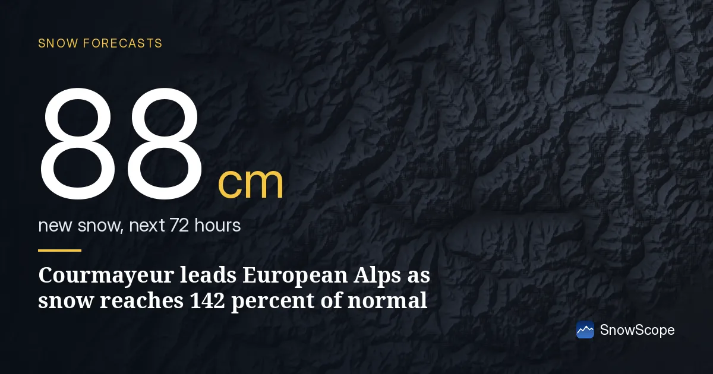

Courmayeur leads European Alps as snow reaches 142 percent of normal
Courmayeur will see the most new snow across the European Alps in the next 72 hours, with our forecast of 88 cm arriving where measured depth is already 42 percent above normal for November. Early-season strength means incoming snow will build on a solid base rather than thin coverage.
See the live snow forecast for Courmayeur in the SnowScope appSnow depth, powder alerts and the 3D map, free.
European Alps ranking and early-season strength
Courmayeur tops the forecast across the Alps for the next 72 hours with 88 cm of new snow on the upper slopes, but the larger story is early strength. The measured snow depth at Courmayeur sits at 27 cm, running 42 percent above the average for this date in past winters—the typical depth here is 19 cm. This matters for skiers: when snow falls onto existing base rather than bare ground, it builds depth faster and stays longer.
Les Grands Montets follows the forecast ranking with 79 cm, and La Thuile Ski adds 78 cm. These numbers suggest the inland Alps around the Mont-Blanc massif will capture the heaviest snowfall over the next 72 hours. The 24-hour window through November 16 brings 9-11 cm to the top three resorts, with the bulk arriving November 16-18.
| # | Resort | Region | +24 h | +72 h | Snow line |
|---|---|---|---|---|---|
| 1 | Courmayeur | Alps · Italy | 10 cm | 88 cm | 2,500 m |
| 2 | Les Grands Montets | Alps · France | 11 cm | 79 cm | 2,100 m |
| 3 | La Thuile ski | Alps · France / Italy | 9 cm | 78 cm | 2,200 m |
| 4 | Les Arcs | Alps · France | 9 cm | 77 cm | 2,100 m |
| 5 | Orelle | Alps · France | 8 cm | 77 cm | 2,500 m |
| 6 | Glacier 3000 | Alps · Switzerland | 13 cm | 73 cm | 2,400 m |
| 7 | Vichères-Bavon | Alps · Switzerland | 9 cm | 73 cm | 2,400 m |
| 8 | Sainte-Foy Tarentaise | Alps · France | 7 cm | 71 cm | 2,000 m |
| # | Resort | Region | +24 h | +72 h | Snow line |
|---|---|---|---|---|---|
| 1 | Kingvale | US West · United States | 10 in (25 cm) | 17 in (44 cm) | – |
| 2 | Mt. Shasta Ski Park | US West · United States | 2 in (4 cm) | 16 in (40 cm) | 4,300 ft (1,300 m) |
| 3 | Bear Valley | US West · United States | 7 in (19 cm) | 14 in (36 cm) | 5,200 ft (1,600 m) |
| 4 | Donner Ski Ranch | US West · United States | 7 in (19 cm) | 14 in (36 cm) | 5,200 ft (1,600 m) |
| 5 | Sierra-at-Tahoe | US West · United States | 7 in (18 cm) | 14 in (35 cm) | 5,600 ft (1,700 m) |
| 6 | Kirkwood | US West · United States | 6 in (16 cm) | 13 in (34 cm) | 5,600 ft (1,700 m) |
| 7 | Palisades Tahoe Alpine Meadows | US West · United States | 7 in (17 cm) | 13 in (32 cm) | 5,200 ft (1,600 m) |
| 8 | Homewood | US West · United States | 6 in (16 cm) | 12 in (30 cm) | – |
| # | Resort | Region | +24 h | +72 h | Snow line |
|---|---|---|---|---|---|
| 1 | Sasquatch | Western Canada · Canada | 17 cm | 17 cm | 900 m |
| 2 | Grouse Mountain | Western Canada · Canada | 16 cm | 17 cm | 900 m |
| 3 | Cypress Mountain | Western Canada · Canada | 13 cm | 14 cm | 900 m |
| 4 | Whistler Blackcomb | Western Canada · Canada | 13 cm | 13 cm | 900 m |
| 5 | Mt Seymour | Western Canada · Canada | 12 cm | 13 cm | 900 m |
| 6 | Banff Sunshine Village | Western Canada · Canada | 9 cm | 12 cm | 1,300 m |
| 7 | Ski Callaghan | Western Canada · Canada | 11 cm | 11 cm | 700 m |
| 8 | Mount Washington Alpine Resort | Western Canada · Canada | 10 cm | 11 cm | 800 m |

North America and Canada forecast rankings
North America shows a different picture. In the US West, Kingvale will receive the most fresh snow in the next 72 hours: 44 cm (17 in) is exceptional for mid-November. Mt. Shasta Ski Park and Bear Valley follow with 40 cm (16 in) and 36 cm (14 in) respectively, all forecast for high elevation.
Western Canada presents a contrast: Sasquatch and Grouse Mountain will each get 17 cm in the next 72 hours, but most of that snow arrives in the next 24 hours rather than spread across three days. The timing matters—Canadian resorts see a sharp push of snow concentrated in one event, while US Sierra resorts have a longer window for accumulation.

Why early-season depth shapes how snow performs
The 142 percent figure at Courmayeur is not just a curiosity; it reflects how early-season mountains build value from each new storm. Here in November, before deep cold sets in, incoming snow is often wet and dense. When it falls onto a base that is already 8 cm deeper than average, compression and settling work in a skier's favor: new snow binds to the existing base, rocks stay buried, and the result is skiable terrain faster.
At lower elevations in the Alps or Canada, where November snow is thinner than average, incoming wet snow compresses to half its depth within days. Early depth is insurance against wind scour and against the disappointment of thin snow by mid-December. This is the value of running strong now.
Elevation, snow lines, and where the snow sticks
The snow line—the elevation where rain transitions to snow—sits between 2,000 m and 2,500 m across the European Alps over the next 72 hours. Les Grands Montets shows the lowest snow line at 2,100 m; Courmayeur's is higher at 2,500 m. This means above 2,100 m at Les Grands Montets, nearly all 79 cm will fall as snow. Below that, some precipitation becomes rain or wet snow.
In the US West, snow lines are lower and variable, from 1,300 m to 1,700 m depending on the mountain, offering more terrain where new snow will accumulate. Know your mountain's snow line before committing to lower runs or off-piste areas. A small rise in temperature between November 16 and 17 could shift the snow line 300 m higher, cutting the depth of fresh snow significantly.
Early-season snow: consolidation and timing
Forecast new snow in mid-November is typically wet and fast-settling. An 88 cm forecast does not translate to 88 cm of deep powder on November 17; settling and compression in warmer temperatures will reduce depth by one-third or more within days. The real value is base-building: incoming snow covers rocks, fills low spots, and raises the floor for the winter ahead.
This forecast window (November 16-18) is a key moment to build that floor. Ski it quickly, within 48 hours of the heaviest falls, before the snow bonds and hardens into spring-like texture. Rocks and thin coverage are still a hazard below 2,000 m even with this incoming snow. Check the official avalanche bulletin for the region before you venture off-piste.
Tips for skiers
- Head to high terrain above 2,000-2,500 m in the European Alps if you want to ski fresh snow throughout the forecast window; below that, rain is likely.
- Kingvale and Bear Valley will attract attention in the US West for new snow; expect crowds if conditions hold through November 17.
- In Western Canada, watch the next 24 hours closely; most snow arrives then, with little follow-up after November 16.
- Early-season snow consolidates within days; don't wait to ski fresh snow if you have safe access.
- Inspect terrain carefully for rocks and thin coverage below 2,000 m even after this new snow, and check the official avalanche bulletin if going off-piste.
About these numbers
Resort snow depths are the deepest snow on the resort's upper slopes from the SnowScope snow model (about 1 km, run of 15 November); they are estimates for an area, not a measurement at one point. Station values are measurements on the date shown. Forecasts can change. Always read the official avalanche bulletin before going off-piste.
Official avalanche bulletins: EAWS (Europe) · avalanche.org (US) · Avalanche Canada
Cite this report
For research, teaching or the press: the numbers and charts are free to reuse under CC BY 4.0 with this citation.
SnowScope (2026), Courmayeur leads European Alps as snow reaches 142 percent of normal, https://snowscope.app/blog/en/2026/11/where-most-snow-falls-next-72-hours-15-november-2026.html, accessed 2026-11-15
SnowScope (Atlas Labs). (2026, November 15). Courmayeur leads European Alps as snow reaches 142 percent of normal. SnowScope snow reports. https://snowscope.app/blog/en/2026/11/where-most-snow-falls-next-72-hours-15-november-2026.html
BibTeX
@misc{snowscope2026wheremostsnowfallsnext72,
author = {{SnowScope (Atlas Labs)}},
title = {Courmayeur leads European Alps as snow reaches 142 percent of normal},
year = {2026},
month = nov,
howpublished = {\url{https://snowscope.app/blog/en/2026/11/where-most-snow-falls-next-72-hours-15-november-2026.html}},
note = {Published 2026-11-15 16:33 UTC; accessed 2026-11-15}
}· CC BY 4.0 · Methods, data and tools →
Courmayeur: snow and temperature by height, this winter vs last (tools) →
Follow Courmayeur
Free: a message when fresh snow is coming, and the forecast every morning.
More snow reports

Orelle holds 42 cm, close to the typical 53 cm for mid-November. Fresh snow forecast across the Alps over the next three days.

Whistler Blackcomb gained 24 cm in one week to 50 cm total; 62 cm more forecast in 72 hours as major storms hit mountains (8 November data).

Whistler Blackcomb sits at 27 cm on 5 November, only 41 per cent of normal for this date. A major system brings 22 cm snow in the next 24 hours.